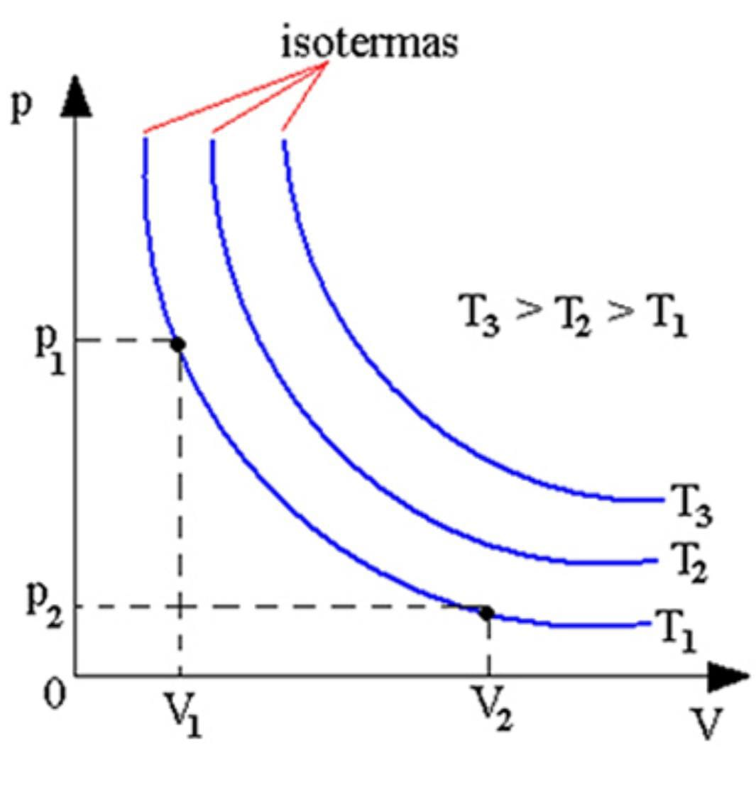
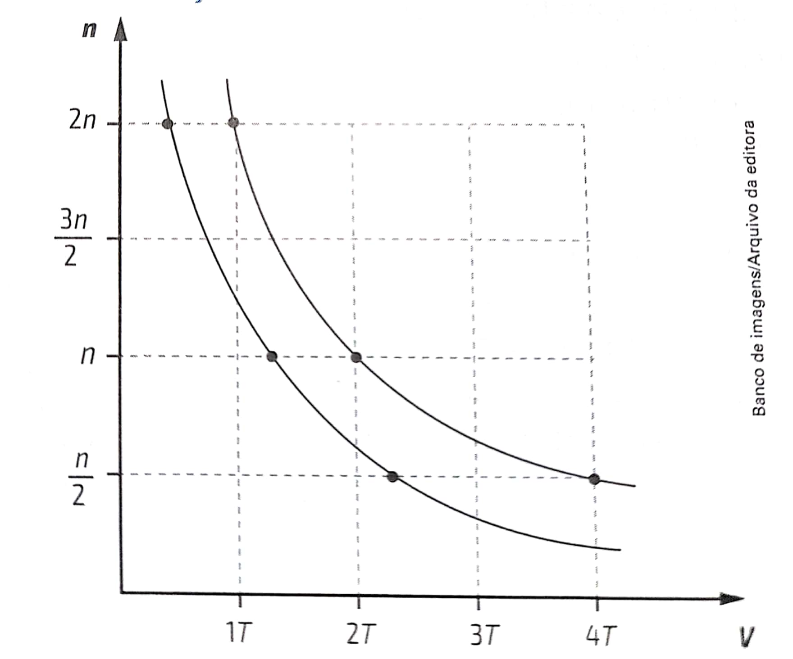
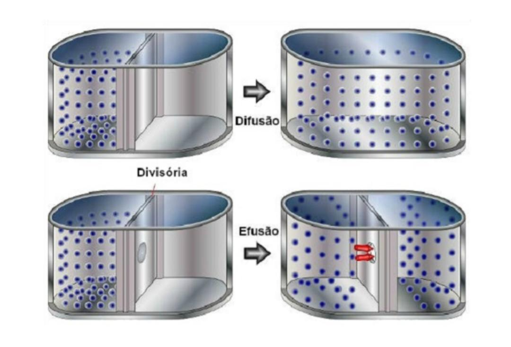

Caro visitante, esperamos que goste do conteúdo, fizemos com muito carinho :) Há questões ao final sobre o conteúdo para que você possa treinar :) Vamos aprender um pouco?!
Os fertilizantes nitrogenados fazem parte da classe de fertilizantes inorgânicos pois levam nitrogênio em sua decomposição, como o próprio nome já diz. Esses adubos são utilizados na agricultura para plantas pobres em nitrogênio, ele contém nutrientes que podem ser absorvidos facilmente pela planta, facilitando sua nutrição. Alguns fertilizantes podem ser citados como a: ureia, amônia e seus derivados e ácido nítrico.
Pelo processo de Haber-Bosch, os fertilizantes nitrogenados são produzidos. O nitrogênio (N2) da atmosfera é captado e misturado com o metano (CH4) do gás natural e com algum composto de ferro que serve como catalisador da reação. Com o calor da queima do gás natural e com mudanças de pressão, a amônia é formada que é uma das mais utilizadas.
A amônia é submetida a altas temperaturas (500 °C e pressão de 200 atm), permitindo obter a amônia líquida. Equação do processo:
N2(g) + 3 H2(g) ↔ 2 NH3(g) ∆ H = -92,22 Kj
Essa equação é a de formação da amônia no estado gasoso, para obtê-la em estado líquido ocorrem essas etapas:
A ureia CO(NH2)2 é um fertilizante sólido granulado tida como principal fonte de nitrogênio (N) para adubação no Brasil. Esse fertilizante apresenta como vantagem a alta concentração de N, alta solubilidade e facilidade de mistura com outras fontes de fertilizantes.
Esse fertilizante é sintetizado a partir da amônia e do gás carbônico com condições de temperatura e pressão elevadas, sua produção é feita com amônia misturada com vapor d’água que é colocada em compressores e gás natural. Após, a amônia recebe gás carbônico obtido por meio da queima do gás natural se transformando em ureia.
A ureia aplicada a um solo úmido (após chuva) e não chover em seguida, pode ser que se transforme em amônia e acabe evaporando junto com os vapores de água por volatilização.
A ureia aplicada a um solo úmido (após chuva) e não chover em seguida, pode ser que se transforme em amônia e acabe evaporando junto com os vapores de água por volatilização.
O ácido nítrico, obtido através de amônia, é utilizado para produzir o NH4NO3 que é um fertilizante nitrogenado, sua produção vem da constituição de íons NH4+ (amônio) e ácido nítrico. Sua fabricação se dá a partir do NH3, conforme as reações abaixo:
4 NH3 + 5 O2 -> 4 NO + H2O 2NO + O2 -> 2 NO2 3 NO2 + H2O -> 2 H2O3 + NO
O comportamento de um gás ou seu estado é classificado quando sabemos os valores do seu volume, pressão e temperatura. A partir da teoria do gás ideal (ou teoria cinética dos gases) é utilizado um modelo para explicar o comportamento dos gases. Essa teoria foi proposta por conta de não se poder ver as partículas dos gases. A partir dessa teoria foi concluído que o movimento das partículas de um gás era contínuo e que essas partículas possuem energia cinética que dependem da massa e da velocidade; também que a energia cinética das partículas pode variar o que acabou definindo que um gás possui uma certa velocidade média e uma energia cinética média de suas partículas. Sendo assim:
Deste modo, em condições cotidianas um gás real se aproxima da teoria do gás ideal quando a pressão diminui e a temperatura aumenta, gerando um distanciamento entre as partículas.
Quando ocorre alguma alteração no volume, pressão ou temperatura de um gás pode-se dizer que ocorreu uma mudança ou transformação de estado. Essas mudanças podem ser exemplificadas por sistemas (denominados como locais de investigação de algum gás). Sistemas podem ser: isolados (sem troca de massa nem energia com o ambiente externo), fechados (há troca de energia com o meio ambiente, mas não de massa) e abertos (há troca de massa e de energia com o meio ambiente). Aplicação: Os fertilizantes nitrogenados na sua síntese são produzidos em sistemas fechados tendo como produto da síntese o estado sólido ou líquido. Na sua utilização são aplicados no solo, deixando-os em um sistema aberto aonde parte dos gases podem retornam para o ambiente por meio da volatilização por conta de questões de temperatura, umidade etc. As transformações de estado podem variar de acordo com a combinação de variação de volume, pressão e temperatura juntos ou constantes. São elas:
Apenas pressão e volume variam. Essa transformação foi constatada por Robert Boyle e Edme Mariotte, ficando conhecida como lei de Boyle-Mariotte. Volume e pressão são inversamente proporcionais, ou seja, se o volume dobrar a pressão cai pela metade e vice-versa. Sendo assim essas grandezas se relacionam de forma que:
Pi * Vi = Pf * Vf
O gráfico da transformação isotérmica é uma hipérbole, onde P representa pressão, V volume e T temperatura, está sendo constante em cada situação no gráfico.
Temperatura e volume variam a uma pressão constante. Essa transformação foi constatada por Joseph e Louis Gay-Lussac, ficando conhecida como primeira lei de Charles e Gay-Lussac. Volume e temperatura são diretamente proporcionais, ou seja, se o volume dobrar a temperatura dobra e vice-versa. Sendo assim essas grandezas se relacionam de forma que:
Vi/Ti = Vf/Tf
Temperatura e pressão variam a um volume constante. Essa transformação foi constatada por Joseph e Louis Gay-Lussac, ficando conhecida como segunda lei de Charles e Gay-Lussac. Pressão e temperatura são diretamente proporcionais, ou seja, se a temperatura dobrar a pressão dobra e vice-versa. Sendo assim essas grandezas se relacionam de forma que:
Pi/Ti = Pf/Tf
Aplicação: No processo de síntese do fertilizante nitrogenado, ocorre esse tipo de transformação, elevando a temperatura e a pressão do gás para produção de amônia líquida e da ureia apresentada acima.
No momento que ocorre uma transformação em um recipiente aberto o número de mols de partículas de gás se transforma de acordo com a temperatura. A pressão e o volume se mantêm constantes. A temperatura e quantidade de matéria do gás são inversamente proporcionais, ou seja, se a temperatura absoluta dobrar, a quantidade de matéria do gás cai pela metade
ni*Ti=nf*Tf
A equação geral dos gases é utilizada para estabelecer o novo estado do gás. A equação foi obtida experimentalmente, tendo no final a equação:
P * V/Ti= constante
Pressão, volume e temperatura se mantêm proporcionais da equação dos gases.
A equação de Clapeyron, criado por Benoît Paul-Émile Clapeyron, cria uma relação entre as determinantes de estado de um gás, para certa quantidade de matéria igual a n, descrevendo o comportamento do gás.
P * V= n * R * T
R determina se a proporção será inversa ou direta entre as variáveis de estado do gás.
R= P * V/1 * T
As constatações feitas sobre o comportamento de um gás ideal também podem ser feitas para misturas gasosas, com a exceção de que não haja reação química na mistura. Considerando que as mesmas regras estão valendo para as misturas gasosas, tem-se a equação de Clayperon escrita da seguinte forma:
P * V = (na + nb + nc) * R * T
Aplicação: Durante o processo de síntese da amônia para os fertilizantes nitrogenados há mistura de N2 e H2 na forma gasosa. Podendo descobrir através da teoria dos gases ideais a fração molar de cada gás nessa mistura, a pressão parcial, o volume parcial, a massa molar aparente e a densidade aparente Obs.: A soma de mols das partículas irá depender da quantidade de gases presentes na mistura. Relações entre cada gás presente na mistura gasosa e a totalidade de gases na mistura.
Relação entre a quantidade de matéria de um determinado gás e a quantidade de matéria total de mistura gasosa expressando por uma fração a quantidade de matéria do gás em relação a uma quantidade total. Considerando que haja os gases Z, Y e ntotal a mistura total:
Xz = nz/ntotal
Xy = ny/ntotal
A pressão parcial que um gás exerce em uma mistura gasosa é igual àquela que ele exerce sozinho, também que ocupa o mesmo volume da mistura em temperaturas e pressões iguais. Sendo assim, a pressão total da mistura gasosa é igual a:
ptotal = p1+ p2 + ... + pn
A pressão parcial de cada componente da mistura gasosa é proporcional a matéria desse componente na mistura, utilizando a equação de Clayperon. Considerando Z um gás:
Pz/Ptotal = nz/ntotal = Xz
Com base em Clayperon e Dalton, Émile Hilaire Amagat chegou a essa lei:
Vtotal = Vx+ Vy+ Vz
O volume parcial de um gás da mistura gasosa também se relaciona com matéria desse componente na mistura. Assim, tem-se:
Vx/Vtotal =nx/ntotal = Xx
A soma das massas de cada gás que faz parte da mistura gasosa é igual à massa total. Então, pode-se calcular a massa molar aparente para uma mistura de gases:
Map = mtotal/ ntotal
Essa fórmula demonstra a massa 1 mol de uma partícula presente na mistura. Através dessa fórmula com as quantidades de matéria e massas molares, a massa aparente também pode ser calculada.
Map = My* Xy + Mz * Xz+ ... + Mn * Xn
A densidade aparente, existente em uma mistura gasosa, pode ser calculada pela equação Clapeyron.
Dap= P * Map/ R * T
A densidade e temperatura absoluta são inversamente proporcionais, ou seja, quando maior a temperatura absoluta, menor a densidade e vice-versa.
O máximo de vapor de água que o ar consegue reter é 4%, esses 4% equivalem a umidade relativa igual a 100%, nessa perspectiva a condição do ar está saturada de vapor.
A evaporação é um agrupamento de fenômenos isolados em que algumas moléculas, individualmente, escapam da superfície do líquido e que pode ser intensificado com o aumento de temperatura. A pressão máxima de vapor de água é a maior pressão que vapor de água exerce em determinada temperatura. É possível medir a quantidade de vapor água no ar atmosférico de duas maneiras:
Ur=Pvapor da água no local a X°C/ Pmaxima de vapor da água a X°C
Numa mesma temperatura, a umidade relativa também pode ser medida pelo quociente entre a pressão parcial de vapor de água presente no ar e a pressão máxima de vapor água.
Difusão é a movimentação voluntária das partículas de gás de se propagarem em meio às partículas de outro gás ou de passarem por uma parede. A efusão é a movimentação voluntária de se evadir das partículas de um gás dentro de um recipiente por uma abertura pequena para um ambiente exterior que possui uma pressão mais baixa. A movimentação das partículas de um gás se relaciona com a energia cinética média das partículas, ou seja, quanto mais a temperatura subir o movimento das partículas será mais rápido.
Aplicação: Durante o processo de síntese da amônia as partículas de nitrogênio e hidrogênio se espalham ocorrendo a difusão. Na sua aplicação no solo o fertilizante nitrogenado chega até a planta pela umidade, fazendo com que a planta absorva nitrogênio pela raiz por difusão.
“Quanto menor for a massa molar do gás, maiores serão suas velocidades de difusão e efusão.”